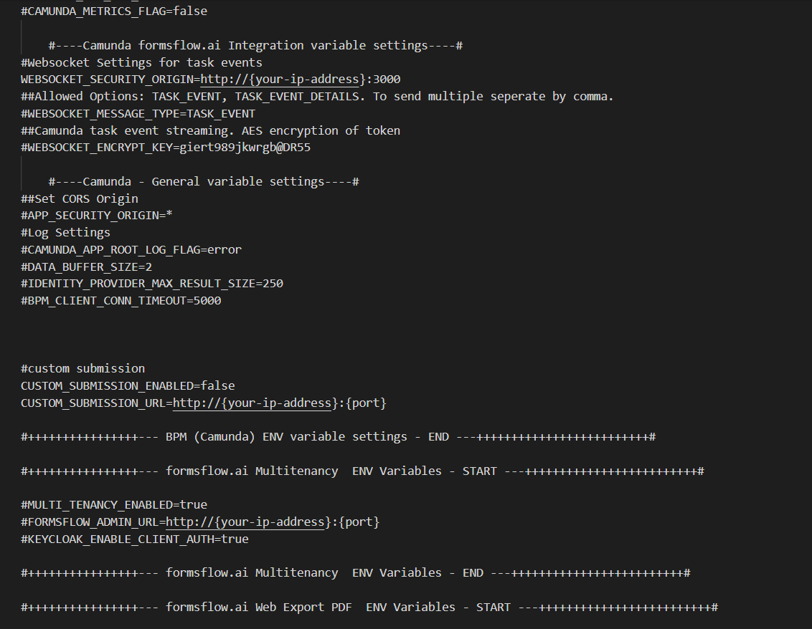

<article class="docs-article" id="section-1">
    <section class="docs-section" id="docker_full_deployment">

        <h1>Docker Full Deployment</h1><br>
        <hr>
        <h3>Installation Steps</h3><br>
        <p>Following steps are required to complete the installation and setup of formsflow.ai solution:
        </p>
        <ul>
            <li>Keycloak setup</li>
            <li>forms-flow-analytics setup</li>
          
            <li>forms-flow-forms ,forms-flow-web, forms-flow-bpm, forms-flow-api setup</li>
        </ul>
        <br>
        <div class="callout-block callout-block-info">
            <div class="content">
                <span class="callout-icon-holder me-1"></span>

                <i class="fa fa-bullhorn"></i>

                <em> Make sure you have a Docker machine up and running.</em>

            </div>

        </div><br>
        <ol>
            <h4>
                <li>Keycloak Setup</li>
            </h4>
            <p>Keycloak is an open source software product to allow single sign-on with Identity and Access Management
                aimed at modern applications and services.</p>
            <p>To install keycloak follow the instructions given <a href="local_keycloaksetup.html" target="_blank">here</a>.</p>
            <h4>
                <li>forms-flow-analytics Setup</li>
            </h4>
            <p>Redash is used to build analytics dashboards. The analytics server can be started by following the
                instructions given <a href="formsflow_analytics.html" target="_blank">here</a>.
            </p>
            
           
            
            <br>
            <h4>
                <li>forms-flow-forms, forms-flow-web, forms-flow-bpm, forms-flow-api & forms-flow-documents Setup</li>
            </h4>
            <p>To setup forms-flow-forms, forms-flow-web, forms-flow-bpm & forms-flow-api follow the below instructions .</p>
            <ul>
                <li>Make sure your current working directory is "/forms-flow-ai/deployment/docker".</li>
                <li>Modify the environment variables inside .env file if needed. Environment variables
                    are given below.</li>
                    <br>
                <code>NOTE :{your-ip-address} given inside the .env file should be changed to your host system IP address.
                Please take special care to identify the correct IP address if your system has multiple network cards.</code>
                <br><br><br>
                </img><br><br>
                <p>KEYCLOAK_BPM_CLIENT_SECRET provided in the <strong> sample.env</strong> is the default one.To generate new secret click <a href="formsflow_bpm.html#bpmclientsecret">here</a> .</p>
                <br>
                </img><br><br>
                <p>To get the redash API key click <a href="formsflow_analytics.html#get-the-redash-api-key">here</a> .</p>
                </img>
                </img>
                </img>
                </img>
                </img>
               
            </ul>
        </ol><br>
        
        <h4>Running the application</h4>
        <ul>
            <li>Run <code>docker-compose up -d</code> to start.</li>

        </ul>
        </img><br><br>
        <h5>To stop the application</h5>
        <ul>
            <li>Run <code>docker-compose stop</code> to stop.</li>
        </ul>
        <h4 id="healthcheck">Health Check</h4>
        <ul>
            <li>Analytics should be up and available for use at port defaulted to 7000 i.e. <a
                    href="http://localhost:7000/">http://localhost:7000/</a>.</li>

            <li>Business Process Engine should be up and available for use at port defaulted to 8000
                i.e.<a href="http://localhost:8000/camunda/"> http://localhost:8000/camunda/</a>.</li>
            <li>FormIO should be up and available for use at port defaulted to 3001 i.e. <a
                    href="http://localhost:3001/">http://localhost:3001/</a>.</li>
            <li>formsflow.ai Rest API should be up and available for use at port defaulted to 5000 i.e.
                <a href="http://localhost:5000/checkpoint">http://localhost:5000/checkpoint</a>.
            </li>
            <li>formsflow.ai web application should be up and available for use at port defaulted to
                3000 i.e. <a href="http://localhost:3000/">http://localhost:3000/</a>.</li>
                <li>Formsflow.ai documents API for use at port defaulted to 5006 i.e. <a href="http://localhost:5006">http://localhost:5006/checkpoint</a>. </li>
            <li>
                <p>Default user credentials are provided <a href="default user credential.html" target="_blank">here</a>.
                </p>
            </li>
        </ul>
        <p>Installation is successfully completed now.</p>
    </section>

</article>